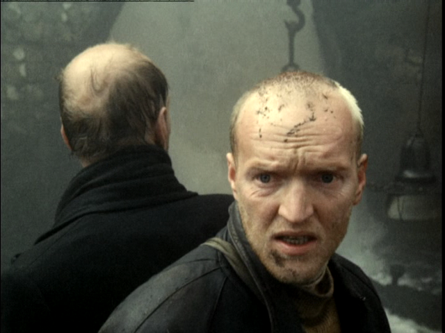
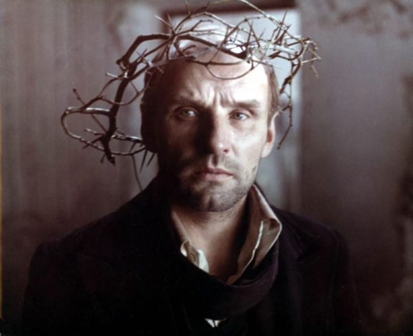
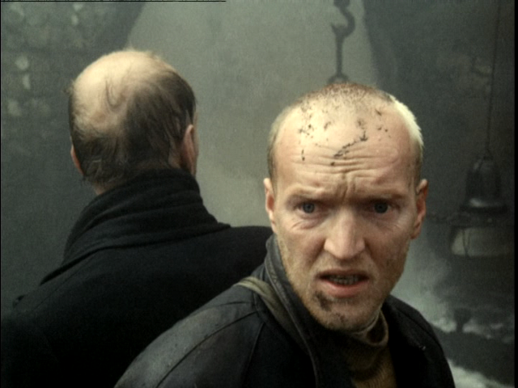
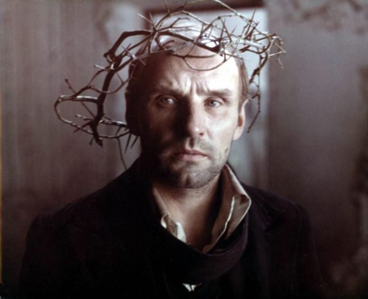

¿Te atreves a entrar?
Una obra maestra, considerada por muchos como la mejor obra del cineasta Ruso Andréi Tarkovski. La base argumental de la película gira alrededor de “la zona”, un lugar hipnótico lleno de vegetación y misterio. Esta zona se halla ahora cerrada y fuertemente protegida por los militares dado que muchos hombres que entraron en ella jamás volvieron.
 



Dos hombres, de los cuales solo sabemos sus profesiones (escritor y profesor), se embarcan en un viaje acompañados por un“stalker” un guía de “la zona”, Con el único objetivo de llegar a una extraña habitación la cual tiene el poder de cumplir tu deseo mas intimo.

Esta es una película larga y lenta, pero sumamente interesante, con una dirección de arte muy hermosa y que refleja muy bien el misterio de la llamada “zona” , sin duda una obra que recomiendo profundamente, que te dejara pensando sobre cual es tu deseo mas intimo.